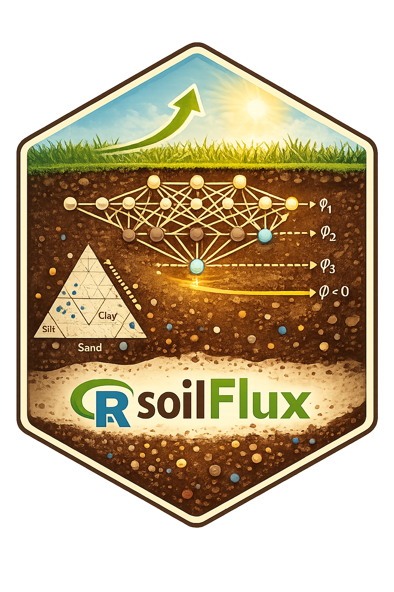

Build observation matrices for the CNN1D model
Source:R/data_prep.R
make_obs_matrices.RdConverts a prepared data frame into the arrays needed for training or
evaluation: a 3-D sequence array Xseq (shape [N, K, p+1]) and
companion vectors pf, y, and sample weights w.
Usage
make_obs_matrices(
df,
x_inputs,
scaler,
K = 64L,
knot_grid = seq(0, 1, length.out = K),
pf_left = -2,
pf_right = 7.6,
wet_split_cm = 4.2,
w_wet = 1,
w_dry = 1
)Arguments
- df
A prepared data frame (output of
prepare_swrc_data()or compatible structure) containing covariate columns,matric_head,theta_n, andtheta_max_n.- x_inputs
Character vector of covariate column names.
- scaler
A fitted scaler from
fit_minmax().- K
Number of knot points (default
64L).- knot_grid
Numeric vector of knot positions (default
seq(0, 1, length.out = K)).- pf_left
Left boundary of the pF domain (default
-2).- pf_right
Right boundary of the pF domain (default
7.6).- wet_split_cm
Matric head threshold (cm) separating wet / dry end (default
4.2, corresponding to pF approximately 0.62).- w_wet
Sample weight for wet-end observations (default
1).- w_dry
Sample weight for dry-end observations (default
1).